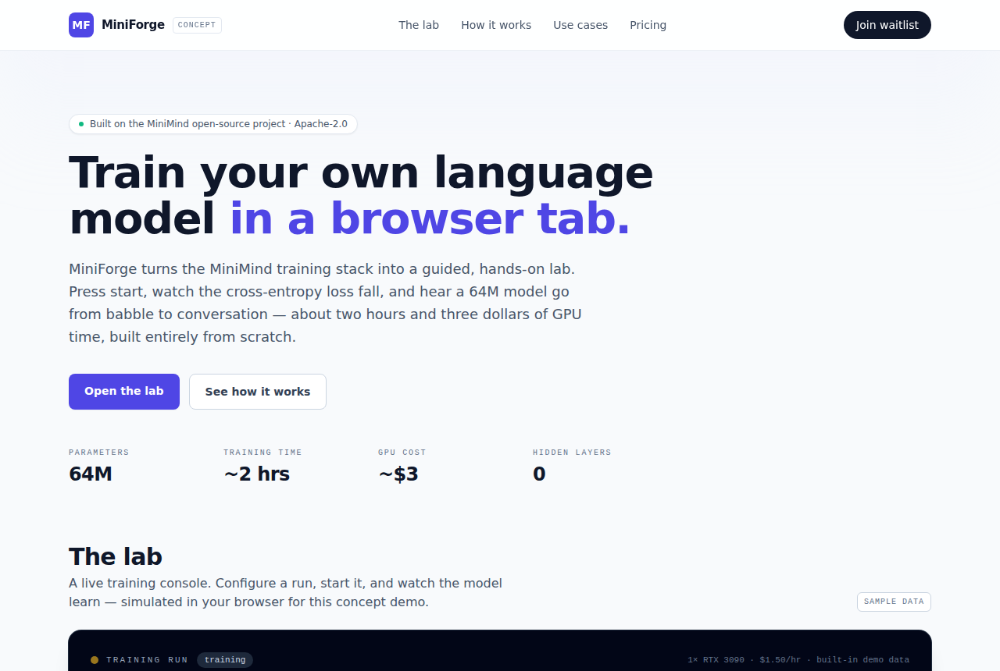

MiniMind: Train a 64M LLM from scratch in 2 hours
jingyaogong/minimind · AI infraApache-2.0⭐ 72,153

MiniMind (jingyaogong/minimind) is an open-source project that lets you train a ~64M parameter language model from scratch in about two hours on a single RTX 3090 — roughly $3 of rented GPU time, per the README. It's not just model weights: the repo includes the tokenizer training code and the full pipeline — pretraining, SFT, LoRA, DPO, PPO/GRPO/CISPO, tool use, agentic RL, and distillation — with core algorithms written in raw PyTorch rather than hidden behind transformers/trl abstractions.
It's taking off because it hits a real gap. Most people "learn LLMs" by fine-tuning something huge; MiniMind lets you watch every stage of a model come to life on hardware you can afford. The structure tracks the Qwen3 / Qwen3-MoE ecosystem, ships training data, and has a small OpenAI-compatible server and Streamlit chat UI. With 72k+ stars and ~670/day recently, it's become a default recommendation for engineers who want to understand LLMs by building one.
The product opportunity is in packaging. The repo is a tutorial and a reproduction, not a product. A browser-based interactive course where you launch a real (or simulated) training run, watch loss curves, tweak hyperparameters, and get explanations at each step could sell to individuals and to instructors who need lab material. The GPU dependency is the main constraint — a hosted environment or a simulated mode is what turns this into something people pay for.
Today's top 5
| # | Repo | Buzz | Startup | Overall |
|---|---|---|---|---|
| 1 | jingyaogong/minimind | 8.33 | 7.65 | 7.67 |
| 2 | kajisho5/ffmpeg-skill | 8.0 | 7.1 | 7.58 |
| 3 | gary23w/f-ck_data_brokers | 8.0 | 6.65 | 7.28 |
| 4 | qianyiai/KuroCat | 8.33 | 5.7 | 7.19 |
| 5 | n8n-io/nod | 8.33 | 6.2 | 6.85 |